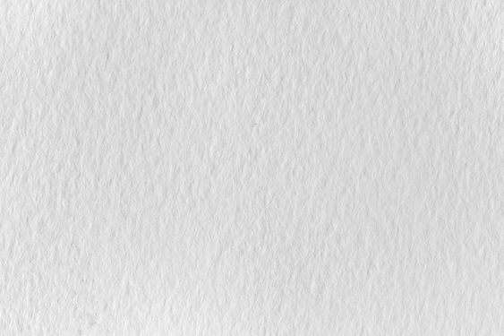

<!doctype html>
<html><!-- InstanceBegin template="/Templates/temp-Blog.dwt" codeOutsideHTMLIsLocked="false" -->
<head>
<meta charset="utf-8">
<!-- InstanceBeginEditable name="doctitle" -->
<title>How are you these days ?</title>
<!-- InstanceEndEditable -->
<link rel="stylesheet" href="css/thuvien.css">
	<link rel="stylesheet" href="css/grid.css">
	<link rel="stylesheet" href="css/slide.css">
	<link rel="stylesheet" href="css/lightbox.css">
	<link rel="icon" type="image/x-icon" href="image/favicon.png">
	<link href="https://unpkg.com/aos@2.3.1/dist/aos.css" rel="stylesheet">
	<link rel="stylesheet" href="https://fonts.googleapis.com/css2?family=Material+Symbols+Outlined:opsz,wght,FILL,GRAD@24,400,0,0" />
	<link rel="stylesheet" href="css/hover.css">
<!-- InstanceBeginEditable name="head" -->
<!-- InstanceEndEditable -->
</head>

<body>
	
<header>
	<nav class="bg-header">
		<div class="container">
		<a href="index.html"></a>
		<div class="menu">
		<ul class="row justify-end">
			
				<li class="hvr-float-shadow"><a href="index.html">Home</a></li>
			    <li class="hvr-float-shadow"><a href="Blog.html">Blog</a></li>
			   <li class="hvr-float-shadow"><a href="about.html">About</a></li>
				<li class="hvr-float-shadow"><a href="#">Services</a></li>
				<li class="hvr-float-shadow"><a href="#">Contact</a></li>
			
		  </ul>	
			
		</div>
		</div>
  </nav>
		</header>
	
	<div class="tentrang">
	
		<div class="container">
		<div class="caption-head">
		<!-- InstanceBeginEditable name="tentrang" -->
		<h1>How are you these days ?</h1>
		<!-- InstanceEndEditable -->
<h3>Trưng bày triển lãm BLM</h3>
		</div>
			</div>
	</div>
	<div class="container">
		<div class="row">
	<!-- InstanceBeginEditable name="main" -->
	<main class="col-9">
			<div class="item-blog">
		
		<h3 class="mt-15">QUANG ĐẠI HỎI THĂM MỌI NGƯỜI QUA TRIỂN LÃM “HOW ARE YOU THESE DAYS?”</h3>
		
		<p class="mt-20 text-gray"><em>Triển lãm cá nhân của Đại giống như lời chào đầy yêu thương dành cho những người bạn cũ lâu ngày không gặp. Dạo này bạn thế nào? Bạn có hạnh phúc không? Bạn buồn vui ra sao? Ngồi xuống đây, chúng ta cùng tâm sự</em></p>
				
				
		<div class="mt-15"></div>
			
			<p class="text-center">Trần Quang Đại trong không gian triển lãm tranh nghệ thuật đầu tiên</p>
			<div class="mt-15"></div>
		<p>Trần Quang Đại gắn liền với rất nhiều vai trò. Đầu tiên là người mẫu nam trưởng thành từ chương trình Vietnam’s Next Top Model 2013. Kế đó là travel blogger và nhà sáng lập Thinker & Dreamer. Rồi từ đại dịch đến nay, Trần Quang Đại lại tìm thấy niềm vui ở vẽ tranh.</p>
			<div class="mt-15"></div>
		<p>Tháng 09/2021, Quang Đại gây bất ngờ khi quyên góp cho từ thiện 11 bức tranh vẽ bằng màu acrylic do chính mình thực hiện xuyên suốt giai đoạn đại dịch. Lúc ấy, anh cho biết đã âm thầm học vẽ tranh được hai năm. “Tôi tình cờ học được rất nhiều từ những người bạn làm hội hoạ về kỹ thuật vẽ, tư duy thẩm mỹ”, anh chia sẻ.</p>
		<div class="mt-15"></div>
		<p>Nay, Trần Quang Đại mở triển lãm tranh như một bước thử nghiệm chính thức với hội họa. Triển lãm cá nhân của anh mang tên How are you these days? (tạm dịch: Dạo này bạn thế nào?).</p>
		<div class="mt-15"></div>
		<h2>Trần Quang Đại không cưỡng cầu trong nghệ thuật</h2>
		<div class="mt-15"></div>
		
		<div class="mt-15"></div>
		<p>Nhiều người sẽ cho rằng Trần Quang Đại thành công vì anh nghiêm túc, dốc toàn bộ sức lực, cố gắng rất nhiều. Điều này đúng, nhưng chỉ một phần. Vì Quang Đại cũng nhận ra rằng mình không thể cưỡng cầu trong nghệ thuật. Trong hành trình sáng tạo, mọi thứ đều rất ngẫu hứng, chẳng có kế hoạch nào trước. Quan trọng là thực hiện những gì có thể trong khả năng của bản thân.</p>
			<div class="mt-15"></div>
		<p>Quang Đại làm công việc của mình giống xây những bậc thang, cứ cần mẫn đón nhận mọi điều bản thân mong muốn, bản thân có thể. Việc vẽ tranh của anh cũng thuận theo tự nhiên, thuận theo những gì anh thấy, anh cảm mỗi ngày.</p>
		<div class="mt-15"></div>
		<p>Và kết quả của hành trình âm thầm lặng lẽ ấy chính là triển lãm How are you these days? mà bạn thấy hôm nay. Anh đã biến sở thích của mình thành hình hài cụ thể, thành một buổi tâm tình trò chuyện bằng tranh, khởi đầu với tác phẩm “Dạo này bạn thế nào?“.</p>
		<div class="mt-15"></div>
		<h2><em>Triển lãm How are you these days? ghi lại từng khoảnh khắc trưởng thành của Đại và của mỗi người</em></h2>
		<div class="mt-15"></div>
		
		<div class="mt-15"></div>
		<p>Những bức tranh của Quang Đại ghi lại hành trình trưởng thành của chính anh và một vài người bạn thân xung quanh. Đó có thể là hình ảnh đón năm mới một mình, bản thân nhìn vào trong gương, khoảnh khắc ôm chú pet đầu tiên đã mất, cảm giác thao thức trằn trọc, về một người bạn đã không còn trên nhân gian…</p>
		<div class="mt-15"></div>
	<p>	Những ký ức này được ghi lại bằng hai gam màu chủ đạo đỏ và xanh. Đỏ là màu Quang Đại ghét nhất, còn xanh lại là gam sắc anh thích nhất. Quang Đại đã dùng hai gam màu này để tạo ra những tác phẩm đầy ý nghĩa. Thoạt nghe thấy thú vị, đơn giản, nhưng có lẽ sâu xa hơn chính là thông điệp Quang Đại gửi đến mọi người. Cuộc sống của chúng ta luôn có hai mặt: tích cực/tiêu cực, tối/sáng, ghét/yêu, buồn/vui… Cách chúng ta đón nhận điều đó như thế nào mới thực sự quan trọng. Và chính thái độ ấy sẽ quyết định số phận của mỗi người.</p>
		<div class="mt-15"></div>
		
		<div class="mt-15"></div>
		Chất liệu Quang Đại sử dụng lần này là sơn dầu. Nói một chút về tranh sơn dầu, loại tranh này có thể tạo ra độ sâu tuyệt vời cho màu sắc của tác phẩm. Sơn dầu có ưu điểm là vừa trong, vừa sâu, lại có độ bão hòa màu sắc rất cao, độ chuyển sắc của nó cũng vô cùng tuyệt vời. Thế nên bạn sẽ thấy nhiều tầng nghĩa ở sau mỗi bức tranh trong triển lãm How are you these days? lần này.
		<div class="mt-15"></div>
		<p>Hỏi về tương lai của đứa con tinh thần cũng như sở thích hội họa, Quang Đại ấp ủ kế hoạch được đem chúng đến với công chúng nhiều hơn.</p>
		<div class="mt-20"></div>
		
		<div class="caption-thanhdoc">
		<p><em class="text-gray">“Chuỗi dự án này của Quang Đại sẽ thực hiện trong vòng 3 năm tới trên khắp Việt Nam như ở Sài Gòn; Hà Nội; Đà Lạt; Huế; Hội An… Đại hi vọng những bức tranh của mình sẽ là nguồn cảm hứng cho người trẻ; cổ vũ mọi người trong hành trình trưởng thành của mình. Có sai, có đúng, dù là thế nào cũng mong bạn sẽ hạnh phúc, bình an trong mọi sự lựa chọn của mình”.</em></p></div>
		</div>
		<div class="mt-30"></div>
			</main>
	<!-- InstanceEndEditable -->
			
		<aside class="col-3">
			<section id="search">
			<form >
				<input type="text" class="tim" placeholder="search here">
				<button class="btn-primary">
					<div class="icon2">
				<span class="material-symbols-outlined">search</span>
</div>

				</button>
				
				</form>
			
			</section>
			
			<section id="baidang">
			<h3 class="text-tintuc">BÀI ĐĂNG GẦN ĐÂY</h3>
			<div class="row">
				<div class="col-4">
				
				</div>
			<div class="col-8">
				<div class="item-thang9">
				<p class="text-comment">03 12, 2019</p>
					<div class="mt-10"></div>
				<h5><a href="#">QUANG ĐẠI HỎI THĂM ....</a></h5></div>
				</div>
			</div>
				
				<div class="row">
				<div class="col-4">
				
				</div>
			<div class="col-8">
				<div class="item-thang9">
				<p class="text-comment">6 11, 2019</p>
					<div class="mt-10"></div>
				<h5><a href="#">THIÊN MINH ĐEM CHÁNH NIỆM...</a></h5></div>
				</div>
			</div>
				
			</section>
			</aside>
	
	</div>
	</div>
	<a href="#" class="back-to-top" id="myBtn">Back to top</a>
<footer class="bg-footer text-light">
	<div class="container">
	<div class="row">
		<div class="col-4 algin-center justify-center">
		
		<h5 class="mt-20 ">Là đơn vị tổ chức triển lãm tranh nghệ thuật tại TP.HỒ CHÍ MINH </h5>
			<div class="mt-20"></div>
			<a href="#" class="btn-secondary">MUA VÉ TẠI ĐÂY</a>
		</div>
		<div class="col-4">
		<h4>You Might like</h4>
			<div class="footer-menu">
			<a href="#">Long Form</a>
			<a href="#">On Stage</a>
			<a href="#">Back Stage</a>
			<a href="#">Agency</a>
			<a href="#">On World</a>
			</div>
		</div>
		<div class="col-4">
		<h4>Explore</h4>
			<div class="footer-menu">
			<a href="#">About Us</a>
			<a href="#">Production</a>
			<a href="#">Technical</a>
			<a href="#">Talent</a>
			<a href="#">Privacy Policy</a>
			</div>
		</div>
		
	
	</div>
		<hr class="thanhngang-footer">
		<div class="mt-20"></div>
		<p class="text-light text-center">Copyright © 2023 Luxuo Media Vietnam. All Rights Reserved. Website Developed by Nhi Blm</p>
	</div>
	
	</footer>
	
	<script>
	// Get the button:
let mybutton = document.getElementById("myBtn");

// When the user scrolls down 20px from the top of the document, show the button
window.onscroll = function() {scrollFunction()};

function scrollFunction() {
  if (document.body.scrollTop > 20 || document.documentElement.scrollTop > 20) {
    mybutton.style.display = "block";
  } else {
    mybutton.style.display = "none";
  }
}

// When the user clicks on the button, scroll to the top of the document
function topFunction() {
  document.body.scrollTop = 0; // For Safari
  document.documentElement.scrollTop = 0; // For Chrome, Firefox, IE and Opera
}
	</script>

</body>
<!-- InstanceEnd --></html>
